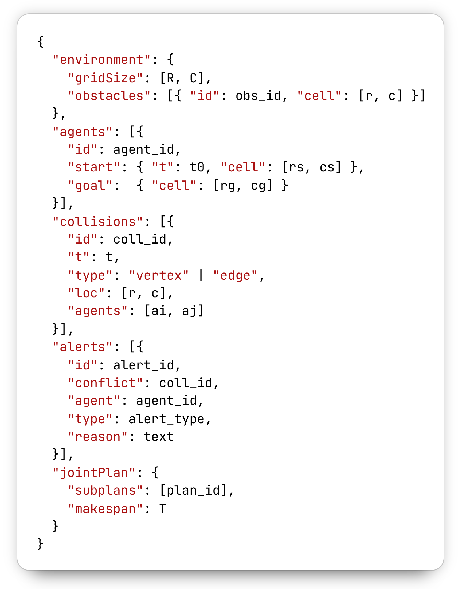

Literature Gap
Existing Explanation Methods Are Fragmented
Segmentation snapshots, stakeholder taxonomies, and logic-based why queries each explain one part of the problem, but MAPF still lacks a unified formal model that links them to planner traces.
Segmentation-based visual explanations [1, 2]
These help humans verify safety, but they do not preserve provenance, replanning rationale, or reusable semantics.
User-centered explanation taxonomies [3]
These clarify what stakeholders want to know, but not a machine-readable structure that answers those questions across planners.
Logic-based why / why-not queries [4]
These can answer specific replanning questions, yet MAPF still lacks a shared semantic representation spanning traces, conflicts, and revisions.
What is still missing
A unified semantic framework that formalizes MAPF entities and supports visual, logical, and contrastive explanations from the same trace.
Planner trace in JSON schema

Figure 2. Planner logs contain rich facts, but those facts are not yet organized as a shared explanation model.
maPO · AAAI 2026 MAKE
04 / 15